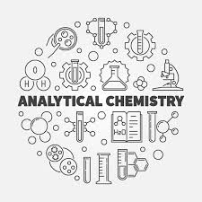
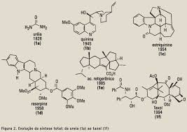

Título 1
Entende-se como Química ambiental o campo de estudos que tem por objetivo conhecer todos os processos químicos que ocorrem na natureza, seja de forma natural, seja provocado por alguma interferência humana. O alvo é gerar esclarecimento sobre todos os mecanismos que controlam a quantidade de substâncias na natureza.
.jpeg)
Environmental chemistry is the scientific study of the chemical and biochemical phenomena that occur in natural places. It should not be confused with green chemistry, which seeks to reduce potential pollution at its source.
Título 2
Química Analítica é o ramo da química que envolve a separação, identificação e determinação das quantidades relativas dos componentes de uma amostra. Traduzir questões gerais, em questões especificas acessíveis que possam ser reproduzidas através de medidas químicas.
Analytical chemistry studies and uses instruments and methods to separate, identify, and quantify matter.[1] In practice, separation, identification or quantification may constitute the entire analysis or be combined with another method. Separation isolates analytes. Qualitative analysis identifies analytes, while quantitative analysis determines the numerical amount or concentration.
Título 3
Parágrafo 3.
Título 4
Parágrafo 4.
.jpeg)
Título 5
Parágrafo 5.
.jpeg)